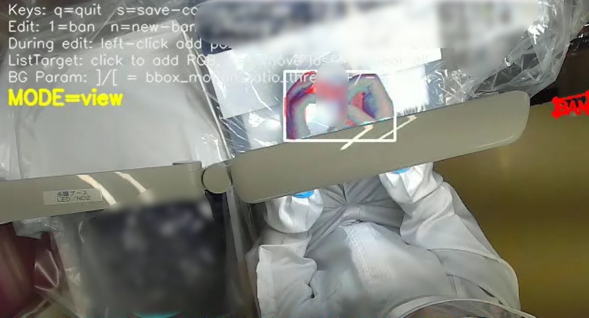
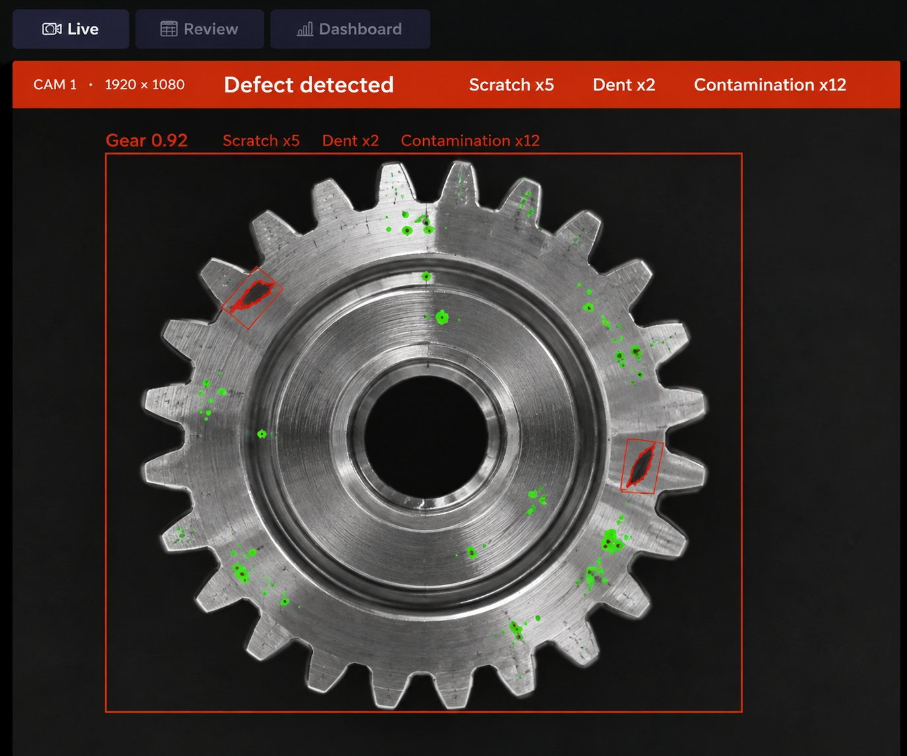
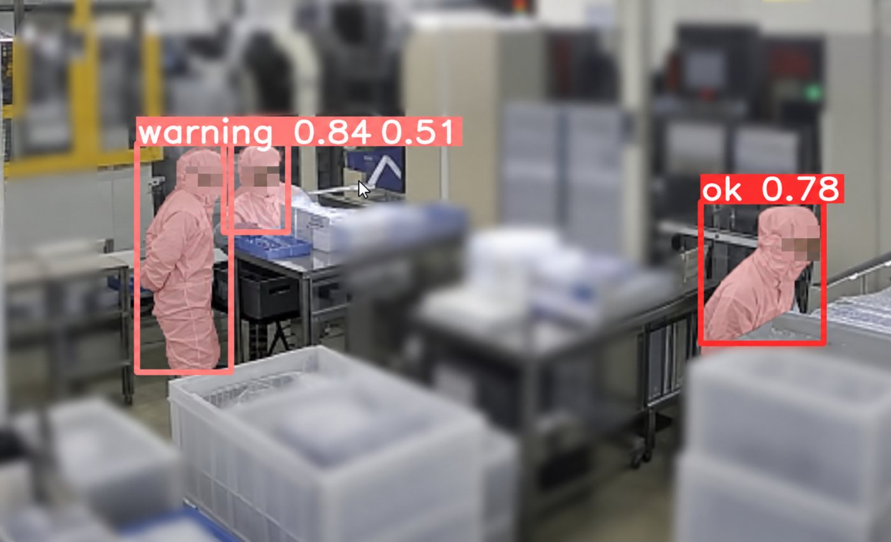

Products & Services
製品・サービス
nanoFACTORYは3つの事業で、製造現場の課題をまとめて解決します。

作業解析AIエージェント "VF3.0"
nanoSTEP
独自AIエージェント"VF3.0"が手順書と現場をつなぎ、作業を客観データに。
現場改善 → 多能工化・教育負担削減 → フィジカルAI まで段階的に展開します。

AI自動検査 システムインテグレーション
nanoI
AI内製開発力を持つSIベンダー。
高額・非効率なコンポーネントをnanoFACTORY製AIに置き換え、確実に動く検査システムを構築します。

AI監視・ルール順守カメラシステム
nanoGUARD
設置してすぐ効果が出る既製品AIカメラパッケージ。
衛生管理（SANI-CAM）・入退室（バーチャルセキュリティゲート）・野生動物対策（熊検出AI）を提供。